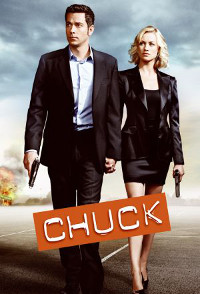
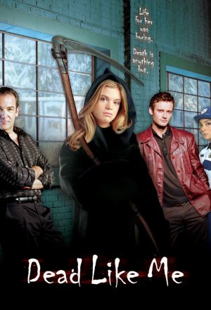
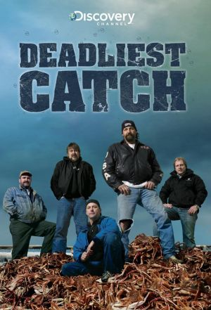
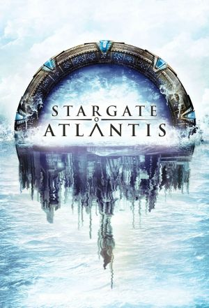
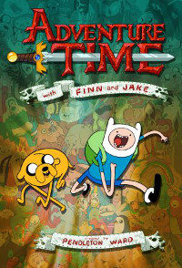
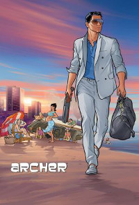

-
ChuckThis high-concept action comedy follows Chuck Bartowski as the Buy More computer geek turned secret agent. When Chuck unwittingly downloads a database of government information and deadly fighting skills into his head, he becomes the CIA's most vital secret. This sets Chuck on a path to become a full-fledged spy, assisted by the stoic Colonel John Casey; Chuck's best friend, Morgan Grimes; and the CIA's top agent (now Chuck's wife) Sarah Walker. With the help of this unlikely team and his unorthodox techniques, Chuck is ready to take Operation Bartowski freelance. Chuck's spy abilities will be put to a new test when he and his team must save mankind without the help of the CIA. Instead, they'll use the cover of the Buy More electronics store to fund their own operations, leading to new missions, new stakes and new obstacles.
-
Dead like Me18-year-old "George" (Georgia) Lass dies when a toilet from the MIR space station falls from the sky and hits her. However, soon she discovers the afterlife really does exist when she becomes a reaper - she helps in catching the souls of people moments before they're destined to die.
-
Deadliest CatchForty-foot waves, 700 pound crab pots, freezing temperatures and your mortality staring you in the face…it's all in a day's work for these modern day prospectors. During each episode we will watch crews race to meet their quota and make it home safely.
-
DexterHe's smart, he's good looking, and he's got a great sense of humor. He's Dexter Morgan, everyone's favorite serial killer. As a Miami forensics expert, he spends his days solving crimes, and nights committing them. But Dexter lives by a strict code of honor that is both his saving grace and lifelong burden. Torn between his deadly compulsion and his desire for true happiness, Dexter is a man in profound conflict with the world and himself.
-
 HouseGo deeper into the medical mysteries of House, TV's most compelling drama. Hugh Laurie stars as the brilliant but sarcastic Dr. Gregory House, a maverick physician who is devoid of bedside manner. While his behavior can border on antisocial, Dr. House thrives on the challenge of solving the medical puzzles that other doctors give up on. Together with his hand-picked team of young medical experts, he'll do whatever it takes in the race against the clock to solve the case.
HouseGo deeper into the medical mysteries of House, TV's most compelling drama. Hugh Laurie stars as the brilliant but sarcastic Dr. Gregory House, a maverick physician who is devoid of bedside manner. While his behavior can border on antisocial, Dr. House thrives on the challenge of solving the medical puzzles that other doctors give up on. Together with his hand-picked team of young medical experts, he'll do whatever it takes in the race against the clock to solve the case. -
Stargate AtlantisThe story of Stargate Atlantis follows the cliffhanger episode on Stargate SG-1's seventh season finale "Lost City", where SG-1 found an outpost made by the race known as the Ancients in Antarctica. After the events of Stargate SG-1 season eight premiere "New Order", the Stargate Command sends an international team to investigate the outpost. Soon, Dr. Daniel Jackson discovers the location of the greatest city created by the Ancients, Atlantis. The story unfolds when the members of the expedition encounter the Wraith, the race that defeated the Ancients ten thousand years ago.
-
Adventure TimeAdventure Time (originally titled 'Adventure Time with Finn & Jake') follows two best friends: Finn (a 12-year old boy) and Jake (a wise 28-year-old dog with magical powers), and the surreal adventures undertaken by the duo as they traverse the mystical Land of Ooo. A world built for adventure, Ooo is filled to the brim with various landscapes for the two buddies to explore and bizarre characters to assist.
-
American IdolThe smash reality series showcases wannabe pop stars competing for a record deal by crooning for a panel of judges. The judges review a performer's talent (or lack thereof), and at-home viewers then vote for their favorite potential star. The show helped launch the careers of such artists as Kelly Clarkson, Carrie Underwood, Jennifer Hudson and Adam Lambert.
-
ArcherAt ISIS, an international spy agency, global crises are merely opportunities for its highly trained employees to confuse, undermine, betray and royally screw each other. At the center of it all is suave master spy Sterling Archer, whose less-than-masculine code name is "Duchess." Archer works with his domineering mother Malory, who is also his boss. Drama revolves around Archer's ex-girlfriend, Agent Lana Kane and her new boyfriend, ISIS comptroller Cyril Figgis, as well as Malory's lovesick secretary, Cheryl.
-
The Dr. Phil ShowDr. Phil is a talk show hosted by Phil McGraw. After McGraw's success with his segments on The Oprah Winfrey Show, Dr. Phil debuted on September 16, 2002. On both shows McGraw offers advice in the form of "life strategies" from his life experience as a clinical psychologist.